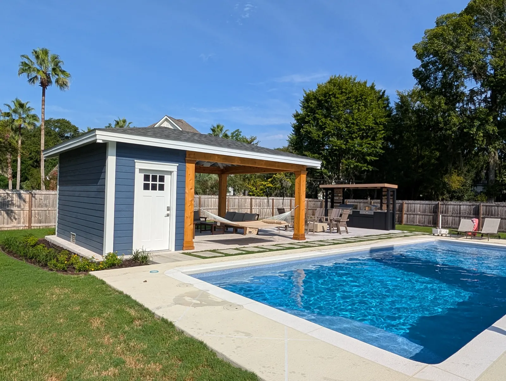
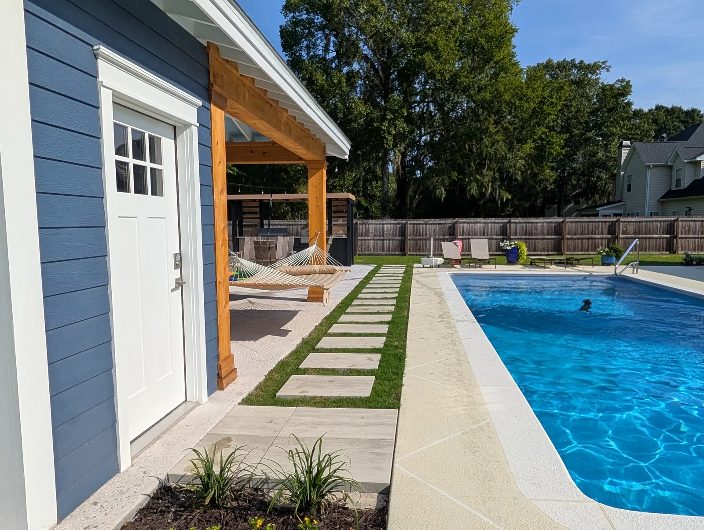

Building a Pavilion at a Pool: What Changes

A Pool Changes the Build
A pavilion at a pool is not the same build as a pavilion on a patio. The structure is the easy part. What changes is everything around it: the floor is wet most of the summer, people arrive barefoot, and there is a building full of equipment somewhere that nobody wants to look at.

The Deck Is the Pavilion’s Floor
On a patio you choose a surface because you like it. At a pool it has to be walked on by wet bare feet, and it has to move water away from the structure rather than towards it.
Both of the pavilions we are best known for solved it differently, and both were right:
- The West Ashley cabana sits on salt-void concrete. It was the cheaper choice on that project and it still looks excellent.
- The Mount Pleasant pavilion has a travertine deck. Natural stone, and it stays cooler underfoot than most alternatives.
Two details do more for a pool deck than the material does. Coping wants to be at least an inch and a half thick, and two inches is better. And drainage is handled by getting the grading right first, with drain basins added where grading alone cannot do it.
Put the Utility Side at the Back
The thing that decides whether a pool gets used casually is whether people have to walk through the house wet. That is what the back of a pavilion is for.
The West Ashley cabana has a storage and bathroom area at the back, out of sight of the seating side. Towels, floats, the pump and filter gear and the chemicals all live somewhere that is not the garage, and nobody tracks through the kitchen to use a bathroom.
It is also the cheapest time to do it. Walls, a door, a slab and the plumbing runs are ordinary work while the structure is going up, and an expensive retrofit afterwards.

Scale: What $30,000 and $80,000 Actually Look Like
A pavilion runs $30,000 to $90,000 and up. At the bottom of that you are buying the structure and not much beyond it. At $80,000 and up you get something like the West Ashley cabana: full trim detailing, speakers, accent lighting, the storage and bathroom area, and the size to match.
The Mount Pleasant pavilion went a different direction with the same money — scale and beams. The engineered timbers that make that ceiling feel grand were $10,000 in materials alone.
Do You Actually Need a Pavilion Here?
A pavilion is the right answer when you want the height and the framing for real amenities — a kitchen, a bathroom, storage, speakers, lighting. That scale is also where the cost is.
A pergola can be built with a solid roof and a finished ceiling too, and it costs less — $10,000 to $30,000. Most of our clients go that way. If what you want is shade and shelter beside the water rather than an outdoor room, that is the honest recommendation, and it leaves budget for the deck underneath it.
For the difference set out properly, see pergola vs. pavilion.
Where to Read the Rest
This post is about the pool side of the decision. The pages that carry the full detail:
- Pavilions — what we build, what the money buys, materials and how a project runs.
- Pool decks — surfaces, coping, drainage, and why decks sink and crack.
- Outdoor kitchens — if the pavilion is going to cook.
What the Code Says Around a Pool
2020 NEC 210.8(A)(3) · Outdoor receptacles
Receptacles outdoors at a home have to be GFCI-protected. Under a pool pavilion that means the outlets feeding a TV, speakers, a fridge or string lights.1
South Carolina rewrote 210.8(A) to cover 125-volt receptacles; outdoors they still need GFCI protection. The 2023 edition takes over on January 1, 2027.2
2020 NEC 680.22(A) · Receptacles near a pool
A pool adds its own rules on top. No receptacle can sit closer than 6 feet to the inside wall of the pool, every 125-volt, 15- or 20-amp receptacle within 20 feet of it needs GFCI protection, and a permanent pool must have at least one general-purpose receptacle between 6 and 20 feet away.3 A pavilion at the pool's edge usually sits inside that 20 feet, so where the outlets for the TV and fridge go is worth settling before the slab is poured.
South Carolina did not modify Article 680.2
References are to the 2021 edition South Carolina enforces today; the 2024 edition takes effect statewide on January 1, 2027. Your local building department decides how any of it applies to a particular property.
Sources
- SC Department of Labor, Licensing and Regulation, 2021 South Carolina Code Adoptions. Source
- SC Building Codes Council, 2021 South Carolina Code Modifications (State Register Vol. 46, Issue 5, May 27, 2022). Source
- National Fire Protection Association, NFPA 70, National Electrical Code, 2020 edition (free read-only access). Source
Frequently Asked Questions
What does a pool pavilion cost in Charleston?
A pavilion runs $30,000 to $90,000 or more. At $30,000 it is the structure and little else; at $80,000 and up you get full trim detailing, speakers, accent lighting and a storage and bathroom area, like our West Ashley cabana.
What is the best surface for a pool deck under a pavilion?
Both work: the West Ashley cabana sits on salt-void concrete, which was the cheaper choice and still looks excellent, and the Mount Pleasant pavilion has a travertine deck. What matters more is coping at least an inch and a half thick, two inches better, and drainage handled by grading with basins where grading is not enough.
Should a pool pavilion include a bathroom?
If the budget reaches, yes. It is what stops people walking through the house wet, and the walls, door, slab and plumbing are ordinary work while the structure is going up but an expensive retrofit afterwards.
Could a pergola work instead of a pavilion at a pool?
Often, and it costs less at $10,000 to $30,000. A pergola can be built with a solid roof and a finished ceiling, and most of our clients go that way. A pavilion earns its money when you want the height and framing for a kitchen, bathroom, storage and speakers.
Planning a Project of Your Own?
See everything we design and build, or get in touch to talk through your ideas with Doug and Zach.